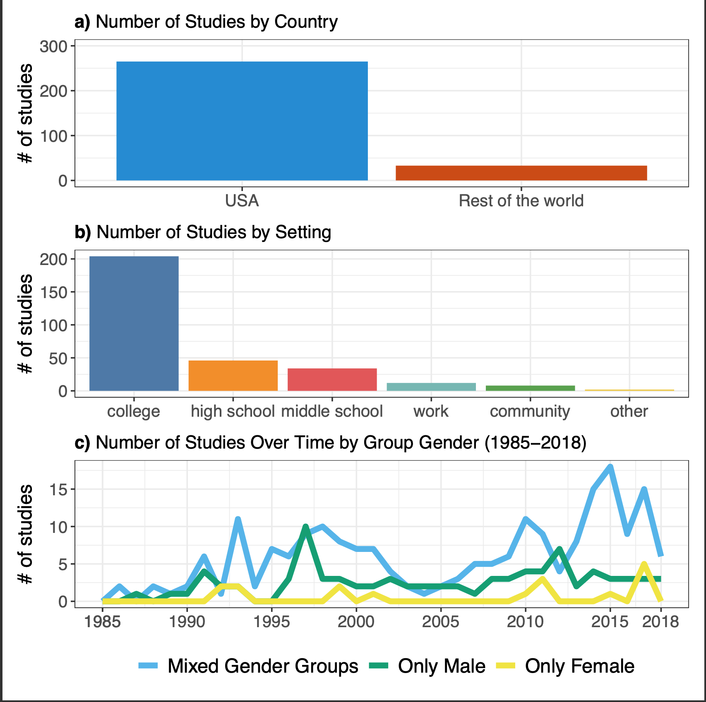
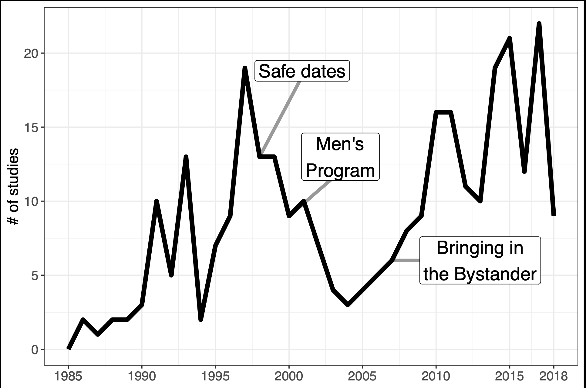
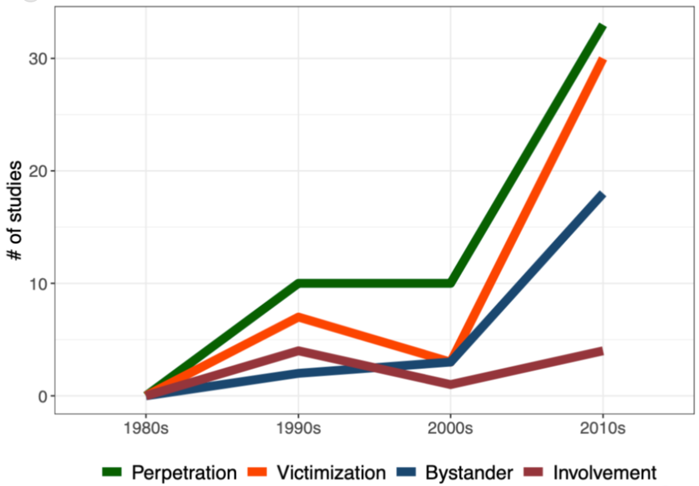
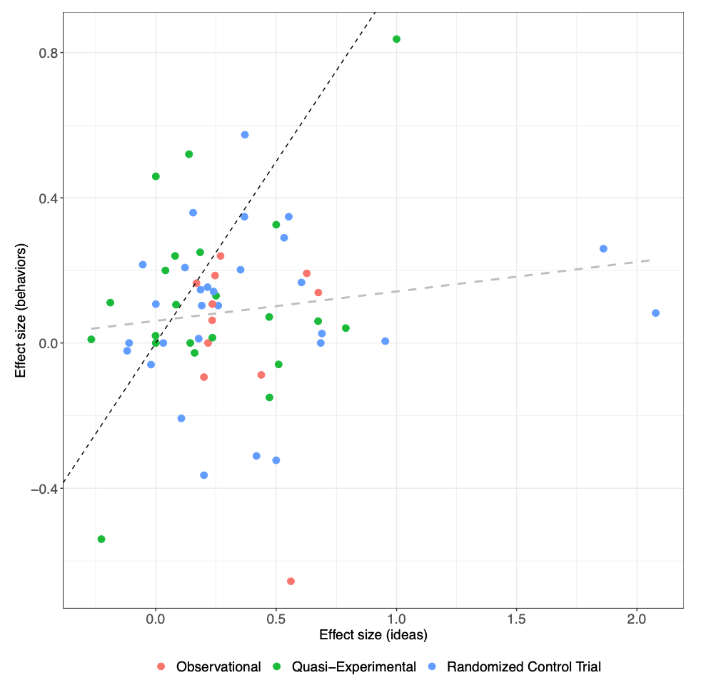

This post summarizes a new paper: Preventing Sexual Violence —A Behavioral Problem Without a Behaviorally-Informed Solution,on which I am coauthor along with Roni Porat, Ana P. Gantman, John-Henry Pezzuto, and Elizabeth Levy Paluck.
The vast majority of papers try to change ideas about sexual violence and are relatively successful at that. However, on the most crucial outcomes — perpetration and victimization — the primary prevention literature has not yet found its footing. We argue that the field should take a much more behavioralist approach and focus on the environmental and structural determinants of violence.
We surveyed papers written between 1986 and 2018 and found 225 manuscripts describing 298 studies, from which we coded 499 distinct point estimates.
We looked specifically at primary prevention efforts, which aim to prevent violence before it happens. This is in contrast to secondary prevention, which, per the CDC, comprises “[i]mmediate responses after sexual violence has occurred to deal with the short-term consequences of violence.” We also didn’t meta-analyze studies where an impact on sexual violence was a secondary or unanticipated consequence of, e.g. giving cash to women unconditionally or opening adult entertainment establishments.
We also didn’t look at anything that tries to reduce violence by focusing on the behavior of potential victims, e.g. self-defense classes or “sexually assertive communication training.”
We also didn’t look at especially high-risk settings, like people who are incarcerated or sex workers.
Here are some graphical overviews:

Here is the distribution of studies over time, with three “zeitgeist” programs highlighted.

Three zeitgeists programs
We highlight three “pioneering and influential programs” that “represent the prevalent approaches to sexual violence prevention in a particular period of time.”
The first is Safe Dates (Foshee et al. 1996), which “makes use of multiple strategies, including a play performed by students, a poster contest, and a ten-session curriculum.” The core idea is that “perpetration and victimization may be decreased by changing dating abuse norms and gender stereotypes, and improving students’ interpersonal skills including positive communication, anger management and conflict resolution.”
The second is the Men’s Program (Foubert, Tatum & Donahue 2006), which aims to prevent sexual violence by men by increasing their empathy and support for victims of sexual violence, and by reducing their resistance to violence prevention programs. E.g.:
Participants in the program watched a 15-minute dramatization of a male police officer who was raped by two other men, and then dealt with the aftermath of the assault. Trained peer educators then told the participants that the perpetrators were heterosexual and known to the victim, and attempted to draw connections between the male police officer’s experience and common sexual violence experiences among women. Participants were then taught strategies for supporting a rape survivor; definitions of consent; and strategies for intervening when a peer jokes about rape or disrespects women, and in situations where a rape may occur.
The third is Bringing in the Bystander (Banyard, Moynihan, & Plante 2007), which
puts helping others in danger and speaking up against sexist ideas (i.e., “bystanding”) at the center of the intervention. As a result, the target behavior change is moved from decreasing perpetration behavior to increasing bystander behavior. The intervention is aimed not at men as potential perpetrators and women as potential victims but everyone as a potential person who can intervene and stop sexual violence.
Perpetration, victimization, and bystander behaviors (intervening when you think sexual violence might happen) have become more popular outcomes over time.

Essentially every intervention we looked at tries to change ideas about sexual violence as a conduit towards reducing violence, and measures ideas as its main outcome.
The implicit model here is sometimes called KAP, or “Knowledge, Attitudes, and Practice.” The typical measure of ideas is acceptance of rape myths (Payne, Lonsway, & Fitzgerald 1999), which take four forms: “disbelief of rape claims, the belief that victims are responsible for rape, that rape reports are manipulation, and that rape only happens to certain kinds of women.”
One study tries to alter physical environments in addition to ideas. Taylor et al. (2013) deployed “a building-level intervention that included building-based restraining orders (“Respecting Boundaries Agreements”), posters to increase awareness of dating violence and harassment, and increased presence of faculty or school security in ‘hot spots’ identified by students.” They evaluated this alongside “Shifting Boundaries,” a curriculum designed to reduce dating violence and sexual harassment among adolescents ages 11-13.
All results are presented in terms of Glass’s ∆, an estimate of standardized mean difference. It takes the difference in average outcomes for the treatment and the control group and divides it by the standard deviation of the dependent variable for the control group. ∆ = 1.0 corresponds to a change of 1 standard deviation in the outcome.
Our random effects meta-analysis reveals an overall effect size of ∆ = 0.28 (SE = 0.025). This effect is statistically significant at p < 0.0001, and corresponds to a small to medium effect size by convention. We did not detect meaningful evidence of publication bias.
The overall effect size for ideas-based outcomes is ∆ = 0.366 (SE = .031), p < 0.0001; for behaviors, it’s ∆ = 0.071 (SE = 0.022), p = 0.0015.
Moreover, things look worse when we subdivide behaviors into their four constituent categories: perpetration, victimization, bystander behaviors, and involvement. (Involvement outcomes measure participants’ interest in participating in sexual violence awareness and prevention activities.)
| N (studies) | Δ (SE) | |
|---|---|---|
| Perpetration | 53 | 0.033 (0.020) |
| Victimization | 40 | 0.046 (0.029) |
| Bystander | 23 | 0.129* (0.059) |
| Involvement | 9 | 0.236* (0.088) |
| Idea-based | 264 | 0.366*** (0.031) |
* p < .05; **p < .01; ***p < .001.
The effects on perpetration and victimization outcomes are neither clinically or statistically significant. We conclude that “on the most crucial outcomes (perpetration and victimization), the primary prevention literature has not yet found its footing.”
43 of 96 bystander studies measure behaviors. Twenty-two of those measured whether bystander interventions increase bystander behaviors, which they do to a modest extent ∆ = 0.154 (SE = 0.056), p = 0.011. In our database, twenty bystander studies measure perpetration or victimization, and had null effects on both perpetration (∆ = 0.019, SE = 0.019, p = 0.329) and victimization (∆ = -0.009, SE = 0.041, p = 0.835). This suggests, unfortunately, that nearly 1 in 3 studies in our database is pursuing a theory of change that does not meaningfully reduce sexual violence.
Sixty-two studies measure both ideas-based and behavioral outcomes. For those studies, the pooled behavior change effect is ∆ = 0.083 (SE = 0.029), p = 0.006, while the pooled idea change effect is ∆ = 0.290 (SE = 0.039), p <0.0001. Unfortunately, in these studies, we find a small, statistically non-significant correlation of r(60) = 0.136, p = 0.293 between changes in ideas and changes in behaviors. The relationship remains small and non-significant when looking solely at randomized evaluations (r = 0.138, p = 0.48). Basically, changing ideas does not appear sufficient for changing behaviors.
This figure displays this lack of relationship:

Each point in the figure represents a study that measures both ideas and behaviors, with the average effect size for ideas about sexual violence (within a given study) on the X axis and the average within-study behavioral effect size on the Y axis. The dotted black line shows what a correlation of 1.0 would look like, and the dotted gray line shows the correlation that we actually observe. Studies are color-coded by design.
From the paper:
[W]e do not currently have many approaches that aim to solve the problem of sexual violence with interventions that target behavior change. Instead, we see predominantly efforts to change attitudes, beliefs, norms, and knowledge surrounding sexual violence with the assumption that behavior change will follow.
…Interventions that take a behavioral approach may do so by considering features of the environment. Physical spaces communicate local norms and expectations (Gantman & Paluck, 2022; S. McMahon et al., 2022) as well as make some behaviors easier than others to enact. Those features could be geographical configurations like a lack of common social space (Gantman & Paluck, 2022)…Another idea that is more relevant to the college setting is based on the finding that college students do not have enough private spaces to interact that are not bedrooms (Hirsch & Khan, 2020). Therefore, future work could quantitatively evaluate the impact of introducing more public spaces to reduce sexual violence on campus. Interventions may also consider who is afforded power in a given situation: For example, who owns the physical space, who has more money, who is driving home, and how the physical space communicates who is valued (Gantman & Paluck, 2022). For example, fraternities with poorly kept women’s restrooms were also places where sexual violence was more likely to occur (Boswell & Spade, 1996). We recommend a focus on geographical and other aspects of physical spaces as one untapped area for future theorizing and intervention programming that targets behavior change.
The Taylor et al. (2013) school-based intervention I mentioned earlier is relatively effective and is a great candidate for large-scale replication.
Unconditional cash transfers to women meaningfully reduce sexual violence.
So does decriminalizing sex work (e.g. in Rhode Island and the Netherlands).
Ditto for opening adult entertainment establishments in NYC.
We write:
We suggest researchers attempt to triangulate on rates of perpetration and victimization through multiple avenues of measurement. When testing interventions conducted in a college campus, researchers can collect complaints filed with the University’s Title IX offices, crime data observed by police on campus grounds, and self-reports of perpetration and victimization…
It is also possible to better assess the relationship between changing ideas about sexual violence and changing behavior. For example, Sharma (2022) tests a sexual harassment training aimed at men in India, and uses an innovative mix of women reporting on harassment behaviors of men in their class, trust games, direct questions and hypothetical scenarios to elicit opinions. Lastly, Schuster, Tomaszewska, and Krah ́e (2022) combine self-reported behavioral data at multiple timepoints with “risky sexual scripts” and open-ended questions to provide a fuller picture of how and when ideas about sexual violence and sexual violence itself vary together.
The one cost-benefit analysis that I can remember is of the SASA! program in Uganda, which estimated they could prevent a single instance of IPV for $486 on average. I do not place much credence in this finding because the study had just 4 clusters in treatment and 4 in control. However, for anyone looking to work in this field, this is probably a good baseline estimate.
If a funder asked me about best current opportunities, I would say we need more basic research, i.e. randomized evaluations of the sorts of behavioral interventions we propose.
I got a lot out of Sexual Citizens, which is an anthropology of sexual violence at Columbia University. Here is a very nice Jia Tolentino article on the same subject.
Code and data are on GitHub and also Code Ocean.
[I also posted this on the Effective Altruism forum.]